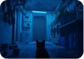
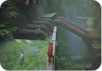
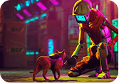
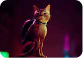
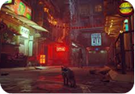
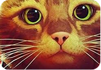
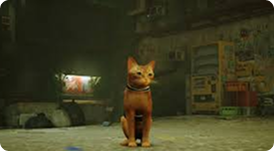
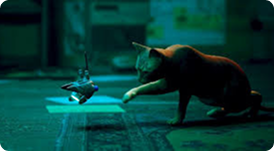
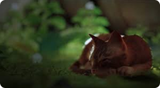
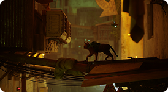

Exploração
O jogo apresenta cenários detalhados em escala felina.

Instinto Felino
Pular com precisão, se esconder, são habilidades naturais do gato que guiam a progressão do jogo.

Robôs Solitários
Mesmo sendo o único animal vivo, o gato interage com robôs que vivem na cidade.

Animações
Os movimentos do gato foram cuidadosamente animados para reproduzir reações típicas dos felinos.

O Charme
Stray se destaca por não transformar o gato em um herói tradicional, mas sim em um animal curioso.

A Conexão
A vulnerabilidade do gato criam uma forte ligação emocional com o jogador ao longo da jornada.

Um Gato Perdido em uma Cidade Esquecida
- Em Stray, o jogador controla um gato comum que se perde em uma cidade futurista abandonada.

Mecânicas Felinas Encantam os Jogadores
- Dormir em almofadas, arranhar sofás e derrubar objetos são ações simples, mas que tornam a experiência de ser um gato realista.

O Gato como Protagonista Silencioso
- Sem falas ou diálogos, o gato de Stray se comunica apenas com miados e movimentos, reforçando a imersão e a sensação de controle animal.
